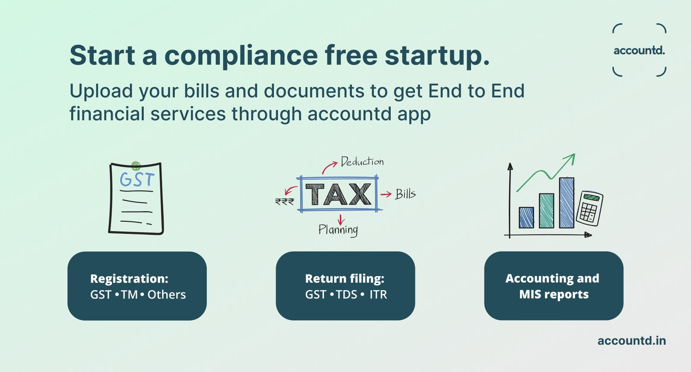
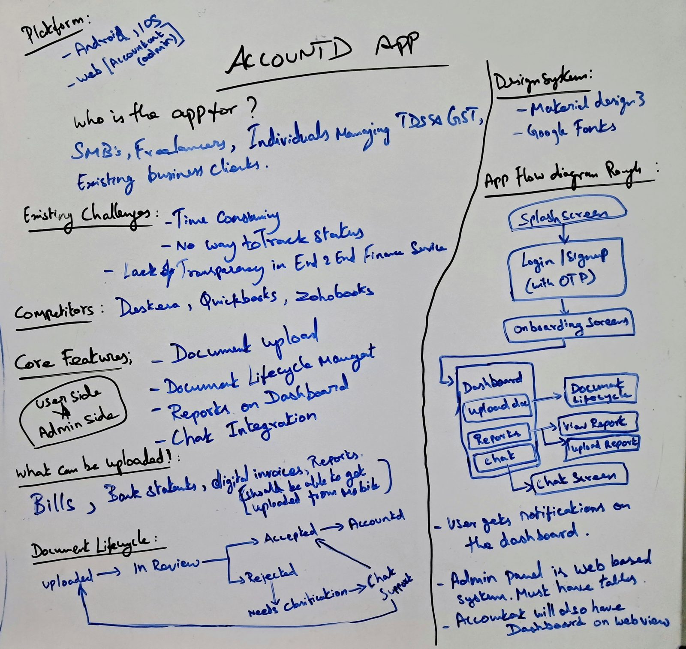
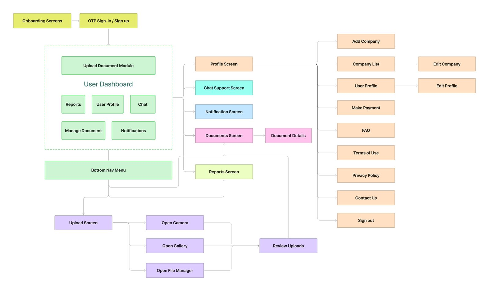
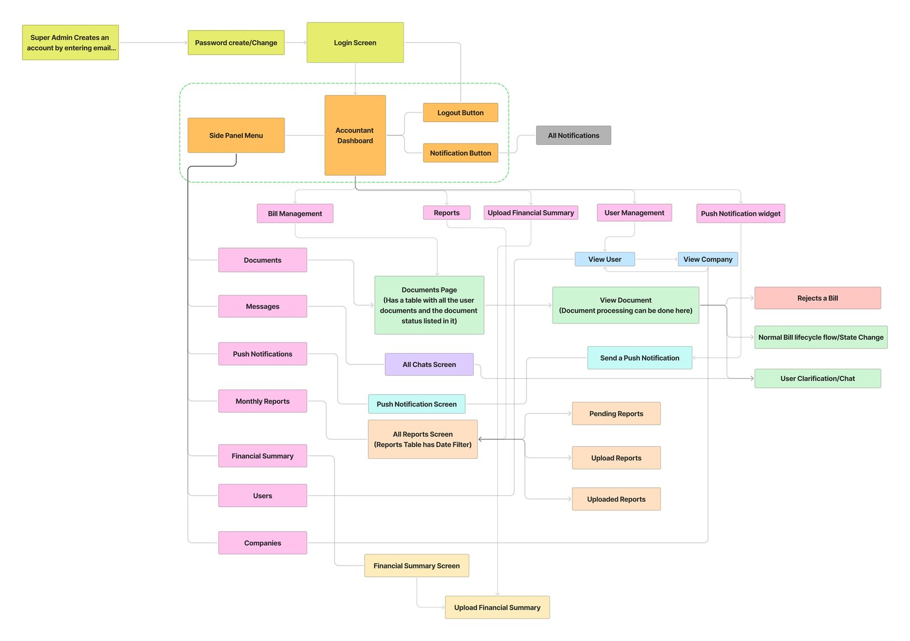
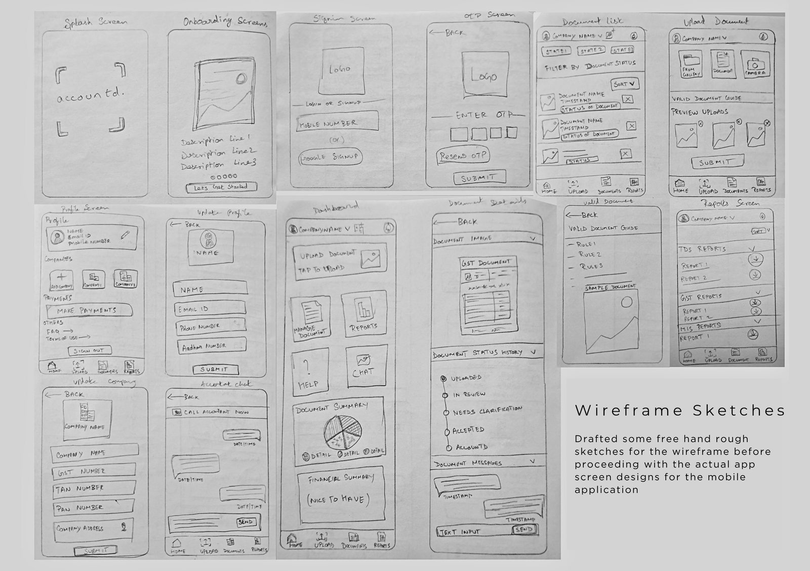
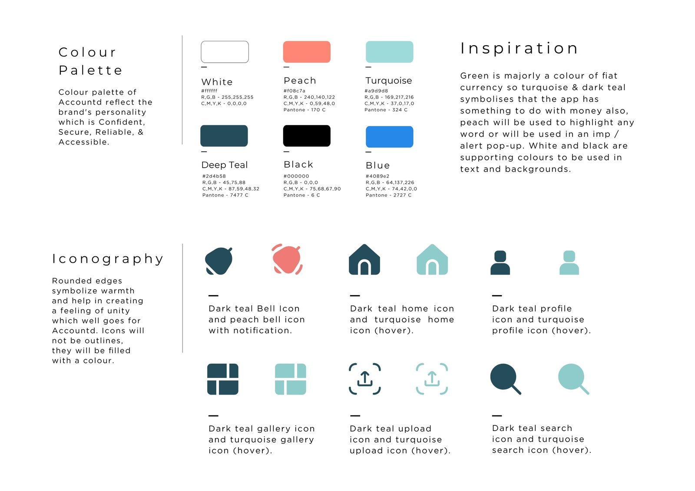
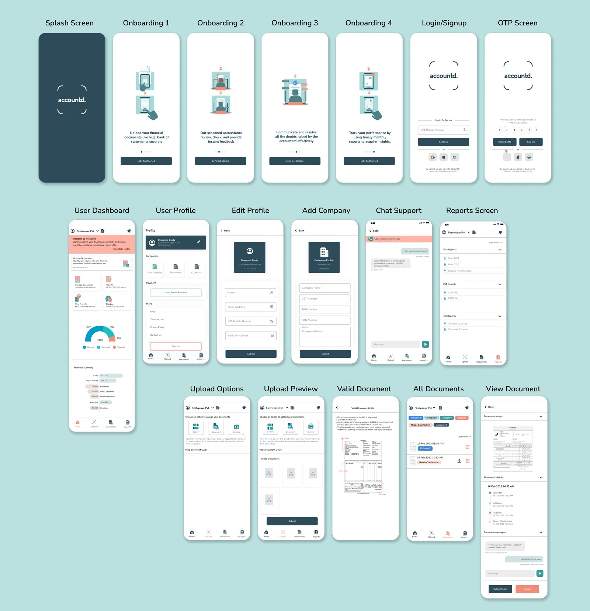
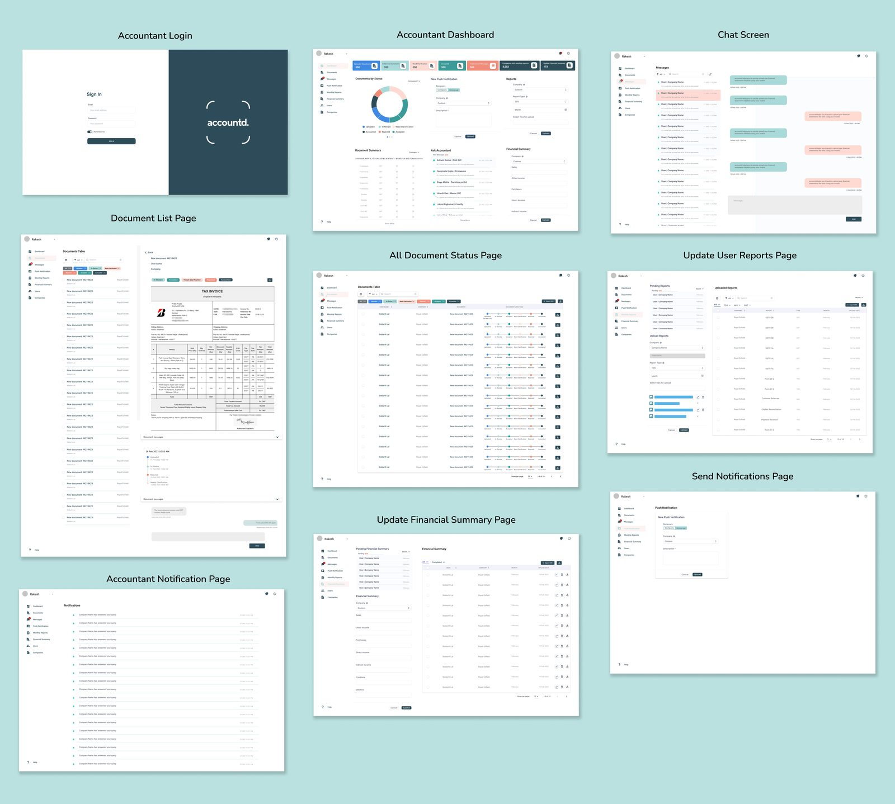

Accountd
Putting an accountant in your pocket, easing the last mile of bill and invoice collection so a CA firm can file GST and TDS on time, every time.

Paper-heavy compliance, without visibility
A CA firm with 20–25 years of experience needed an application to ease the last mile of bill and invoice collection from clients, in order to file GST accurately and on time. Traditional methods were slow, paper-heavy, and offered no real-time status.

Target users
- Existing client companies of the CA firm.
- Startups and SMEs.
- Individuals managing GST or TDS compliance.
Objectives
- Make financial document management simple and mobile-friendly.
- Provide workflow transparency through document status tracking.
- Enable direct communication with accountants to resolve queries.
- Offer automated compliance reports with minimal manual effort.
Whiteboarding & flow decisions

Flow decisions, resolved in Q&A
- Duplicate bills? Tagged "Rejected" by the accountant, with three possible reasons: wrong photo, illegible, or duplicate.
- Rejection reason? An optional text box lets the accountant explain why.
- Back button after a photo? Users can submit directly; navigating back requires a fresh photo.
- Multiple companies per user? Yes. Each user can add and switch between multiple companies from the dashboard.
Brainstorming outcomes
- Minimal UI on Google's Material Design 3 as the base system.
- Clean typography for trust and clarity across device platforms.
- Colour-coded statuses: Accepted, Rejected, In Review, Needs Clarification, Accounted.
- Modular dashboard: Home, Upload, Documents, Reports, Chat Support, Summaries.
- Competitor analysis was deprioritised for v1 to focus on shipping core features first.
Information architecture → wireframes → design language → interface






Impact & potential
- Reduced back-and-forth emails and calls with accountants.
- Transparent tracking minimised document confusion.
- Faster GST/TDS filings backed by accurate records.
- Human-centred chat integration built trust and ease of access.
Projected growth: 100,000+ SMEs and freelancers could adopt Accountd within two years, saving roughly 2.5M work hours annually.
Learnings & next steps
- Users requested reminders for pending document uploads.
- A payment gateway needs to be integrated for accounting services.
- Future scope: AI-powered invoice categorisation and anomaly detection.
More projects: brand, print & graphic design.

Brand identity and packaging design for a cold-pressed organic oil company.
View project
Brand identity and premium packaging design for a water bottle manufacturer.
View project
Design workgroup lead for India's annual Python conference in Bengaluru.
View project